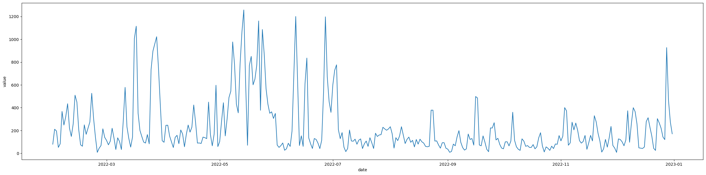

# IMPORT PACKAGES
import os
import seaborn as sns
import matplotlib.pyplot as plt
import numpy as np # linear algebra
import pandas as pd # data processing, CSV file I/O (e.g. pd.read_csv)
from pathlib import PathIntroduction
In this notebook, we shall take a look at solar and wind power output for the year 2022. The paper titled Evaluating solar and wind electricity production in the Kingdom of Bahrain to combat climate change, remarks on readings taken for the whole year, and has even sourced data for the weather conditions for the whole year (though this may seem unsubstantial at first considering they are monthly averages)
In this notebook, we will try to find correlations between the weather variables and the power-output in the dataset, and ultimately, find predictors we can use to predict solar/wind power. We will look at both power outputs separately.
Data Requirements
All the CSV files can be found in the data/ folder - solar_daily_2022.csv: Solar power output in KwH for each day of the year 2022 - wind_daily_2022.csv: Wind power output in KwH for each day of the year 2022 - triple_vars_monthly.csv: Humidity (%), Temperature (celsius) & Wind Speed (m/s) for each month of the year 2022 - manama.csv : Extended set of weather variables for each day of the year 2022, sourced from Visual Crossing
Import Packages & Setup
# For the Kaggle Environment, please uncomment below
# kaggle_root = '/kaggle/input/bahrain-solar-research-2022'
# root_path = !ls
data_path = Path('data/')Load Target Variables (Solar + Wind Power Output)
solar_file = data_path/'solar_daily_2022.csv'
solar = pd.read_csv(solar_file)
solar.date = pd.to_datetime(solar.date)
solar.info()<class 'pandas.core.frame.DataFrame'>
RangeIndex: 365 entries, 0 to 364
Data columns (total 2 columns):
# Column Non-Null Count Dtype
--- ------ -------------- -----
0 date 365 non-null datetime64[ns]
1 value 365 non-null float64
dtypes: datetime64[ns](1), float64(1)
memory usage: 5.8 KBwind = pd.read_csv(data_path/'wind_daily_2022.csv')
wind.date = pd.to_datetime(wind.date)
wind.info()
wind<class 'pandas.core.frame.DataFrame'>
RangeIndex: 333 entries, 0 to 332
Data columns (total 2 columns):
# Column Non-Null Count Dtype
--- ------ -------------- -----
0 date 333 non-null datetime64[ns]
1 value 333 non-null float64
dtypes: datetime64[ns](1), float64(1)
memory usage: 5.3 KB| date | value | |
|---|---|---|
| 0 | 2022-01-31 | 79.75 |
| 1 | 2022-02-01 | 211.10 |
| 2 | 2022-02-02 | 195.53 |
| 3 | 2022-02-03 | 51.82 |
| 4 | 2022-02-04 | 83.44 |
| ... | ... | ... |
| 328 | 2022-12-27 | 120.22 |
| 329 | 2022-12-28 | 926.98 |
| 330 | 2022-12-29 | 462.69 |
| 331 | 2022-12-30 | 273.46 |
| 332 | 2022-12-31 | 170.90 |
333 rows × 2 columns
Load Rest of the Data
humidity_monthly = pd.read_csv(data_path/'humidity_percent_monthly_2022.csv')
temp_monthly = pd.read_csv(data_path/'temp_in_celcius_monthly_2022.csv')
wind_speed_monthly = pd.read_csv(data_path/'wind_speed_metre_per_second_monthly_2022.csv')
humidity_monthly.info()
temp_monthly.info()
wind_speed_monthly.info()<class 'pandas.core.frame.DataFrame'>
RangeIndex: 12 entries, 0 to 11
Data columns (total 2 columns):
# Column Non-Null Count Dtype
--- ------ -------------- -----
0 month 12 non-null int64
1 value 12 non-null float64
dtypes: float64(1), int64(1)
memory usage: 320.0 bytes
<class 'pandas.core.frame.DataFrame'>
RangeIndex: 12 entries, 0 to 11
Data columns (total 2 columns):
# Column Non-Null Count Dtype
--- ------ -------------- -----
0 month 12 non-null int64
1 value 12 non-null float64
dtypes: float64(1), int64(1)
memory usage: 320.0 bytes
<class 'pandas.core.frame.DataFrame'>
RangeIndex: 12 entries, 0 to 11
Data columns (total 2 columns):
# Column Non-Null Count Dtype
--- ------ -------------- -----
0 month 12 non-null int64
1 value 12 non-null float64
dtypes: float64(1), int64(1)
memory usage: 320.0 bytesPlots
It always help to view plots of the dataset and how it varies in time.
Daily Power Output (Solar)
plt.figure(figsize=(30, 7))
sns.lineplot(data=solar, x='date', y='value')<AxesSubplot: xlabel='date', ylabel='value'>Daily Power Output (Wind)
plt.figure(figsize=(30, 7))
sns.lineplot(data=wind, x='date', y='value')<AxesSubplot: xlabel='date', ylabel='value'>
Weather Conditions (Monthly Basis)
Temperature (in Celcius)
# plt.figure(figsize=(30, 7))
sns.lineplot(data=temp_monthly, x='month', y='value')<AxesSubplot: xlabel='month', ylabel='value'>Wind Speed (m/s)
sns.lineplot(data=wind_speed_monthly, x='month', y='value')<AxesSubplot: xlabel='month', ylabel='value'>Humidity (%)
# plt.figure(figsize=(30, 7))
sns.lineplot(data=humidity_monthly, x='month', y='value')<AxesSubplot: xlabel='month', ylabel='value'>Combine Data
In this section, we will merge both the target variables and the features, to have one single dataframe to work with.
wind_renamed = wind.rename(columns={'value': 'wind_power'})
solar_renamed = solar.rename(columns={'value': 'solar_power'})
target_data = wind_renamed.merge(solar_renamed, how='outer', on='date')
target_data = target_data.sort_values('date').reset_index(drop=True)
target_data| date | wind_power | solar_power | |
|---|---|---|---|
| 0 | 2022-01-01 | NaN | 527.55 |
| 1 | 2022-01-02 | NaN | 762.18 |
| 2 | 2022-01-03 | NaN | 1343.82 |
| 3 | 2022-01-04 | NaN | 1469.36 |
| 4 | 2022-01-05 | NaN | 1588.27 |
| ... | ... | ... | ... |
| 360 | 2022-12-27 | 120.22 | 1132.27 |
| 361 | 2022-12-28 | 926.98 | 1395.73 |
| 362 | 2022-12-29 | 462.69 | 1307.64 |
| 363 | 2022-12-30 | 273.46 | 746.64 |
| 364 | 2022-12-31 | 170.90 | 865.91 |
365 rows × 3 columns
The wind power variable has missing values, let’s fill in the gap and see difference as different plots Wind power data with & without interpolation
Wind Power (Before Interpolation)
plt.figure(figsize=(30, 7))
sns.lineplot(target_data, x='date', y='wind_power')<AxesSubplot: xlabel='date', ylabel='wind_power'>Wind Power (After Interpolation)
target_data.wind_power = target_data.wind_power.interpolate(limit_direction='both')
plt.figure(figsize=(30, 7))
sns.lineplot(target_data, x='date', y='wind_power')<AxesSubplot: xlabel='date', ylabel='wind_power'>Correlation w/ Internal Data
What we will do now, is to find correlations between the weather variables and the power output (wind & solar). Considering that the weather conditions are only recorded once every month as opposed to the power output which is recorded on a daily basis; we will approximate the daily weather measurements with the month’s value i.e. if July had an average of 40 deg. celcius, then we will assume that every day of July had the same temperature.
Before that however, let’s combine these weather variables…
target_data['month'] = target_data.date.dt.month
target_data| date | wind_power | solar_power | month | |
|---|---|---|---|---|
| 0 | 2022-01-01 | 79.75 | 527.55 | 1 |
| 1 | 2022-01-02 | 79.75 | 762.18 | 1 |
| 2 | 2022-01-03 | 79.75 | 1343.82 | 1 |
| 3 | 2022-01-04 | 79.75 | 1469.36 | 1 |
| 4 | 2022-01-05 | 79.75 | 1588.27 | 1 |
| ... | ... | ... | ... | ... |
| 360 | 2022-12-27 | 120.22 | 1132.27 | 12 |
| 361 | 2022-12-28 | 926.98 | 1395.73 | 12 |
| 362 | 2022-12-29 | 462.69 | 1307.64 | 12 |
| 363 | 2022-12-30 | 273.46 | 746.64 | 12 |
| 364 | 2022-12-31 | 170.90 | 865.91 | 12 |
365 rows × 4 columns
wind_speed_monthly_renamed = wind_speed_monthly.rename(columns={'value': 'wind_speed'})
humidity_monthly_renamed = humidity_monthly.rename(columns={'value': 'humidity'})
temp_monthly_renamed = temp_monthly.rename(columns={'value': 'temp'})
_ = target_data.merge(wind_speed_monthly_renamed, on='month', how='inner')
_ = _.merge(humidity_monthly_renamed, on='month', how='inner')
_ = _.merge(temp_monthly_renamed, on='month', how='inner')
merged_all = _.copy()
merged_all| date | wind_power | solar_power | month | wind_speed | humidity | temp | |
|---|---|---|---|---|---|---|---|
| 0 | 2022-01-01 | 79.75 | 527.55 | 1 | 5.29 | 68.57 | 17.99 |
| 1 | 2022-01-02 | 79.75 | 762.18 | 1 | 5.29 | 68.57 | 17.99 |
| 2 | 2022-01-03 | 79.75 | 1343.82 | 1 | 5.29 | 68.57 | 17.99 |
| 3 | 2022-01-04 | 79.75 | 1469.36 | 1 | 5.29 | 68.57 | 17.99 |
| 4 | 2022-01-05 | 79.75 | 1588.27 | 1 | 5.29 | 68.57 | 17.99 |
| ... | ... | ... | ... | ... | ... | ... | ... |
| 360 | 2022-12-27 | 120.22 | 1132.27 | 12 | 4.34 | 66.92 | 22.45 |
| 361 | 2022-12-28 | 926.98 | 1395.73 | 12 | 4.34 | 66.92 | 22.45 |
| 362 | 2022-12-29 | 462.69 | 1307.64 | 12 | 4.34 | 66.92 | 22.45 |
| 363 | 2022-12-30 | 273.46 | 746.64 | 12 | 4.34 | 66.92 | 22.45 |
| 364 | 2022-12-31 | 170.90 | 865.91 | 12 | 4.34 | 66.92 | 22.45 |
365 rows × 7 columns
Correlation Plot
variables = ['wind_power', 'solar_power', 'wind_speed', 'humidity', 'temp']
corr = merged_all[variables].corr()
sns.heatmap(corr, annot=True)<AxesSubplot: >Results
- For wind power, we can see humidity & wind speed have the highest correlations
- For solar power, we don’t see any strong correlations
- Notable features that correlate highly with one another are
- (temp, humidity)
- (wind_speed, humidity)
Sweetviz Package
The Sweetviz library is popular package to automate the analysis and display a competent report of the dataset. We will use this package with our original dataset, and with our extended set of features (manama.csv).
import sweetviz as svWind Power Report
from IPython.display import display, Markdownanalyze_report = sv.analyze([merged_all,'Wind Power Report'], 'wind_power')
filepath = 'reports/wind_power_internal_data.html'
analyze_report.show_html(filepath=filepath, layout='vertical', open_browser=False)
display(Markdown(f'**To view the report, [CLICK HERE]({filepath})**'))Feature: wind_power (TARGET) |█▎ | [ 12%] 00:00 -> (00:00 left)Done! Use 'show' commands to display/save. |██████████| [100%] 00:01 -> (00:00 left)Report reports/wind_power_internal_data.html was generated.To view the report, CLICK HERE
Conclusion
We can tell from this report, that there are a few variables, mainly wind_speed and humidity that corrleate highly with wind_power. We can use these as predictors
Solar Power Report
analyze_report = sv.analyze([merged_all,'Solar Power Report'], 'solar_power')
filepath = 'reports/solar_power_internal_data.html'
analyze_report.show_html(filepath=filepath, layout='vertical', open_browser=False)
display(Markdown(f'**To view the report, [CLICK HERE]({filepath})**'))Done! Use 'show' commands to display/save. |██████████| [100%] 00:01 -> (00:00 left)Report reports/solar_power_internal_data.html was generated.To view the report, CLICK HERE
Conclusion
No suitable predictors can be found for solar_power. We don’t attempt to build a model around it.
Load Extended Weather Data
external_weather_df = pd.read_csv(data_path/'manama.csv')
external_weather_df.rename(columns={'windspeed': 'wind_speed', 'datetime': 'date'}, inplace=True)
external_weather_df.date = pd.to_datetime(external_weather_df.date)
external_weather_df.info()<class 'pandas.core.frame.DataFrame'>
RangeIndex: 365 entries, 0 to 364
Data columns (total 33 columns):
# Column Non-Null Count Dtype
--- ------ -------------- -----
0 name 365 non-null object
1 date 365 non-null datetime64[ns]
2 tempmax 365 non-null float64
3 tempmin 365 non-null float64
4 temp 365 non-null float64
5 feelslikemax 365 non-null float64
6 feelslikemin 365 non-null float64
7 feelslike 365 non-null float64
8 dew 365 non-null float64
9 humidity 365 non-null float64
10 precip 365 non-null float64
11 precipprob 365 non-null int64
12 precipcover 365 non-null float64
13 preciptype 26 non-null object
14 snow 351 non-null float64
15 snowdepth 1 non-null float64
16 windgust 356 non-null float64
17 wind_speed 365 non-null float64
18 winddir 365 non-null float64
19 sealevelpressure 365 non-null float64
20 cloudcover 365 non-null float64
21 visibility 365 non-null float64
22 solarradiation 365 non-null float64
23 solarenergy 365 non-null float64
24 uvindex 365 non-null int64
25 severerisk 356 non-null float64
26 sunrise 365 non-null object
27 sunset 365 non-null object
28 moonphase 365 non-null float64
29 conditions 365 non-null object
30 description 365 non-null object
31 icon 365 non-null object
32 stations 365 non-null object
dtypes: datetime64[ns](1), float64(22), int64(2), object(8)
memory usage: 94.2+ KBexternal_weather_df.columnsIndex(['name', 'date', 'tempmax', 'tempmin', 'temp', 'feelslikemax',
'feelslikemin', 'feelslike', 'dew', 'humidity', 'precip', 'precipprob',
'precipcover', 'preciptype', 'snow', 'snowdepth', 'windgust',
'wind_speed', 'winddir', 'sealevelpressure', 'cloudcover', 'visibility',
'solarradiation', 'solarenergy', 'uvindex', 'severerisk', 'sunrise',
'sunset', 'moonphase', 'conditions', 'description', 'icon', 'stations'],
dtype='object')# important_cols = ['date', 'temp', 'dew', 'humidity', 'precip', 'wind_speed', 'winddir', 'visibility', 'solarradiation', 'solarenergy', 'uvindex', 'sunrise', 'sunset']
important_cols = ['date', 'temp', 'humidity', 'wind_speed']
external_weather_df_selected = external_weather_df[important_cols].copy()
external_weather_df_selected.loc[:, 'wind_speed'] = external_weather_df_selected.wind_speed.apply(lambda x: x*1000/(60*60)) # convert from km/h to m/s
external_weather_df_selected| date | temp | humidity | wind_speed | |
|---|---|---|---|---|
| 0 | 2022-01-01 | 19.4 | 82.8 | 7.638889 |
| 1 | 2022-01-02 | 20.6 | 85.5 | 9.638889 |
| 2 | 2022-01-03 | 18.2 | 76.5 | 6.722222 |
| 3 | 2022-01-04 | 16.9 | 61.6 | 9.722222 |
| 4 | 2022-01-05 | 15.3 | 49.4 | 9.250000 |
| ... | ... | ... | ... | ... |
| 360 | 2022-12-27 | 19.6 | 70.7 | 4.777778 |
| 361 | 2022-12-28 | 17.6 | 63.1 | 12.833333 |
| 362 | 2022-12-29 | 18.0 | 67.4 | 10.222222 |
| 363 | 2022-12-30 | 18.1 | 65.2 | 7.138889 |
| 364 | 2022-12-31 | 18.3 | 66.5 | 6.611111 |
365 rows × 4 columns
# combine with target data
merged_with_external = target_data.merge(external_weather_df_selected, on='date')
assert merged_with_external.isnull().sum().sum() == 0
merged_with_external| date | wind_power | solar_power | month | temp | humidity | wind_speed | |
|---|---|---|---|---|---|---|---|
| 0 | 2022-01-01 | 79.75 | 527.55 | 1 | 19.4 | 82.8 | 7.638889 |
| 1 | 2022-01-02 | 79.75 | 762.18 | 1 | 20.6 | 85.5 | 9.638889 |
| 2 | 2022-01-03 | 79.75 | 1343.82 | 1 | 18.2 | 76.5 | 6.722222 |
| 3 | 2022-01-04 | 79.75 | 1469.36 | 1 | 16.9 | 61.6 | 9.722222 |
| 4 | 2022-01-05 | 79.75 | 1588.27 | 1 | 15.3 | 49.4 | 9.250000 |
| ... | ... | ... | ... | ... | ... | ... | ... |
| 360 | 2022-12-27 | 120.22 | 1132.27 | 12 | 19.6 | 70.7 | 4.777778 |
| 361 | 2022-12-28 | 926.98 | 1395.73 | 12 | 17.6 | 63.1 | 12.833333 |
| 362 | 2022-12-29 | 462.69 | 1307.64 | 12 | 18.0 | 67.4 | 10.222222 |
| 363 | 2022-12-30 | 273.46 | 746.64 | 12 | 18.1 | 65.2 | 7.138889 |
| 364 | 2022-12-31 | 170.90 | 865.91 | 12 | 18.3 | 66.5 | 6.611111 |
365 rows × 7 columns
Sweetviz
Wind Power Report
analyze_report = sv.analyze([merged_with_external,'Wind Power Report'], 'wind_power')
filepath = 'reports/wind_power_external_data.html'
analyze_report.show_html(filepath=filepath, layout='vertical', open_browser=False)
display(Markdown(f'**To view the report, [CLICK HERE]({filepath})**'))Done! Use 'show' commands to display/save. |██████████| [100%] 00:00 -> (00:00 left)Report reports/wind_power_external_data.html was generated.To view the report, CLICK HERE
Solar Power Report
analyze_report = sv.analyze([merged_with_external,'Solar Power Report'], 'solar_power')
filepath = 'reports/solar_power_external_data.html'
analyze_report.show_html(filepath=filepath, layout='vertical', open_browser=False)
display(Markdown(f'**To view the report, [CLICK HERE]({filepath})**'))Done! Use 'show' commands to display/save. |██████████| [100%] 00:00 -> (00:00 left)Report reports/solar_power_external_data.html was generated.To view the report, CLICK HERE
Using All Features in the Extended Dataset
important_cols = ['date', 'temp', 'dew', 'humidity', 'precip', 'wind_speed', 'winddir', 'visibility', 'solarradiation', 'solarenergy', 'uvindex', 'sunrise', 'sunset']
external_weather_df_selected = external_weather_df[important_cols].copy()
# convert from km/h to ms/
external_weather_df_selected.loc[:, 'wind_speed'] = external_weather_df_selected.wind_speed.apply(lambda x: x*1000/(60*60)) # convert from km/h to m/s
def get_diff_in_hours_and_mins(x):
diff = x['sunset']-x['sunrise']
return diff.total_seconds()/60
# get sunlight duration
external_weather_df_selected.sunrise = pd.to_datetime(external_weather_df_selected.sunrise)
external_weather_df_selected.sunset = pd.to_datetime(external_weather_df_selected.sunset)
external_weather_df_selected['sunlight_duration_in_secs'] = external_weather_df_selected.apply(get_diff_in_hours_and_mins, axis=1)
external_weather_df_selected.drop(['sunrise', 'sunset'], axis=1, inplace=True)assert external_weather_df_selected.isnull().sum().sum() == 0sns.barplot(external_weather_df_selected, x='date', y='sunlight_duration_in_secs')<AxesSubplot: xlabel='date', ylabel='sunlight_duration_in_secs'># combine with target data
merged_with_external = target_data.merge(external_weather_df_selected, on='date')
assert merged_with_external.isnull().sum().sum() == 0
merged_with_external| date | wind_power | solar_power | month | temp | dew | humidity | precip | wind_speed | winddir | visibility | solarradiation | solarenergy | uvindex | sunlight_duration_in_secs | |
|---|---|---|---|---|---|---|---|---|---|---|---|---|---|---|---|
| 0 | 2022-01-01 | 79.75 | 527.55 | 1 | 19.4 | 16.4 | 82.8 | 15.9 | 7.638889 | 55.0 | 10.2 | 127.7 | 11.2 | 6 | 631.716667 |
| 1 | 2022-01-02 | 79.75 | 762.18 | 1 | 20.6 | 18.0 | 85.5 | 3.1 | 9.638889 | 106.2 | 9.9 | 103.9 | 9.0 | 4 | 632.133333 |
| 2 | 2022-01-03 | 79.75 | 1343.82 | 1 | 18.2 | 13.9 | 76.5 | 0.0 | 6.722222 | 298.7 | 7.4 | 175.2 | 15.2 | 7 | 632.566667 |
| 3 | 2022-01-04 | 79.75 | 1469.36 | 1 | 16.9 | 9.4 | 61.6 | 0.0 | 9.722222 | 304.2 | 10.3 | 183.5 | 15.9 | 7 | 633.050000 |
| 4 | 2022-01-05 | 79.75 | 1588.27 | 1 | 15.3 | 4.7 | 49.4 | 0.0 | 9.250000 | 301.1 | 11.5 | 190.6 | 16.5 | 7 | 633.550000 |
| ... | ... | ... | ... | ... | ... | ... | ... | ... | ... | ... | ... | ... | ... | ... | ... |
| 360 | 2022-12-27 | 120.22 | 1132.27 | 12 | 19.6 | 14.1 | 70.7 | 0.3 | 4.777778 | 198.7 | 8.3 | 157.1 | 13.5 | 6 | 630.150000 |
| 361 | 2022-12-28 | 926.98 | 1395.73 | 12 | 17.6 | 10.4 | 63.1 | 0.1 | 12.833333 | 306.0 | 9.9 | 127.9 | 10.9 | 6 | 630.366667 |
| 362 | 2022-12-29 | 462.69 | 1307.64 | 12 | 18.0 | 11.7 | 67.4 | 0.0 | 10.222222 | 310.2 | 8.4 | 163.2 | 14.0 | 6 | 630.633333 |
| 363 | 2022-12-30 | 273.46 | 746.64 | 12 | 18.1 | 11.4 | 65.2 | 0.0 | 7.138889 | 305.8 | 10.1 | 123.2 | 10.7 | 5 | 630.916667 |
| 364 | 2022-12-31 | 170.90 | 865.91 | 12 | 18.3 | 11.9 | 66.5 | 0.1 | 6.611111 | 304.3 | 10.1 | 141.8 | 12.0 | 6 | 631.250000 |
365 rows × 15 columns
analyze_report = sv.analyze([merged_with_external,'Wind Power Report'], 'wind_power')
filepath = 'reports/Extra_Features_wind_power_external_data.html'
analyze_report.show_html(filepath=filepath, layout='vertical', open_browser=False)
display(Markdown(f'**To view the report, [CLICK HERE]("{filepath}")**'))Done! Use 'show' commands to display/save. |██████████| [100%] 00:01 -> (00:00 left)Report reports/Extra_Features_wind_power_external_data.html was generated.To view the report, CLICK HERE
analyze_report = sv.analyze([merged_with_external,'Solar Power Report'], 'solar_power')
filepath = 'reports/Extra_Features_solar_power_external_data.html'
analyze_report.show_html(filepath=filepath, layout='vertical', open_browser=False)
display(Markdown(f'**To view the report, [CLICK HERE]("{filepath}")**'))Done! Use 'show' commands to display/save. |██████████| [100%] 00:01 -> (00:00 left)Report reports/Extra_Features_solar_power_external_data.html was generated.To view the report, CLICK HERE